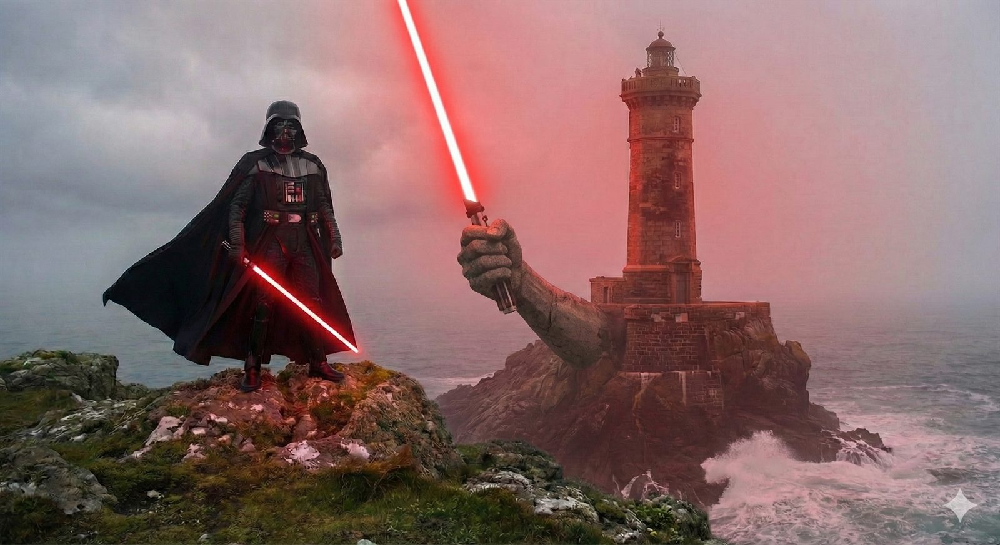

Welcome to Cloudy Bay
SWGoH guild reports — Rise of the Empire.
Reva Readiness
Who can field the Inquisitor team for the Reva special mission
RotE Platoons
Platoon fill by planet/level, assignments, and who's closest